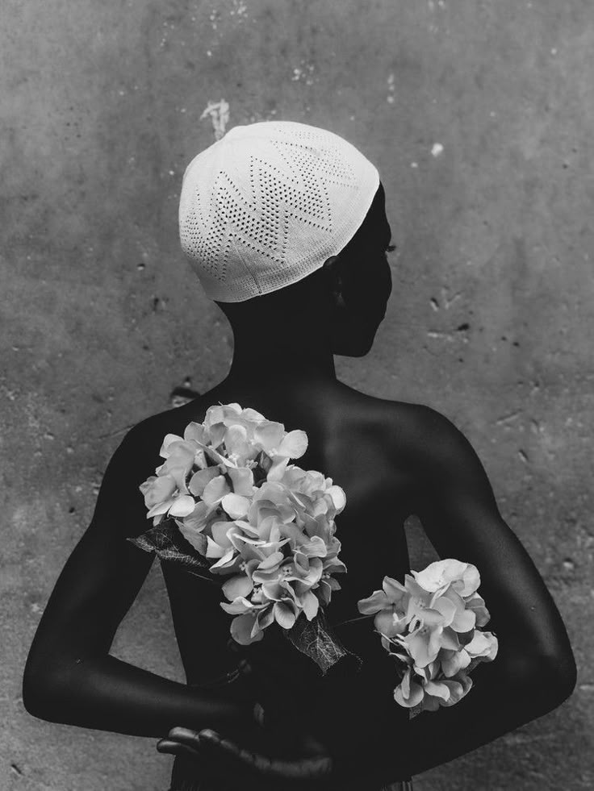

De costas, mas jamais ausente.
Essa figura, coroada por flores e coberta por uma touca branca, carrega nas costas muito mais do que o próprio corpo: carrega história, fé, silêncio e força.
É um retrato da dignidade que se impõe mesmo quando não é vista de frente.
As flores não são ornamento — são sinal de que, mesmo sob dureza, ainda há beleza que brota.
A imagem propõe um ato de reverência: olhar para quem tantas vezes é esquecido, sem invadir, sem reduzir, apenas reconhecer.